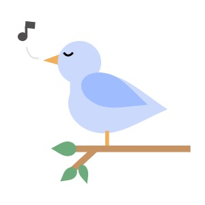

Stress relief for the modern generation.
Quotes
“Just because you're trash doesn't mean you can't do great things. It's called garbage can, not garbage cannot.”
- Anonymous
"Stop telling yourself that the grass is greener on the other side, because it’s not. It is greener where you water it. So take control of your life and start watering your own pastures and grow your own greener grasses."
"Do not be daunted by the enormity of the world’s grief. Do justly, now. Love mercy, now. Walk humbly now. You are not obligated to complete the work, but neither are you free to abandon it."
- Rabbi Tarfon
"Be alone. Eat alone, take yourself on dates, sleep alone. In the midst of this you will learn about yourself. You will grow, you will figure out what inspires you, you will curate your own dreams, your own beliefs, your own stunning clarity, and when you do meet the person who makes your cells dance, you will be sure of it, because you are sure of yourself."
"People wait
All week for Friday,
All year for Summer,
And all life for happiness."
"Mental illness can make you feel like giving up and then you wake up the next day, feeling like you have no choice but to get up again. When no one’s there for you, you have to rely on the inner voice inside you to keep hoping and to keep fighting. Despite the days where we feel drained of energy and life, we need our inner voice to echo resilience. That isn’t weakness; that’s strength from inside and we are fighters."
"Not loving yourself back is also unrequited love."
- Tablo, Blonote
